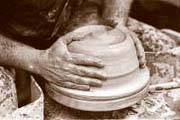

| Why On Earth Do They Call
It Throwing?
An investigation into the origin of words, by Dennis Krueger
Images courtesy Edouard Bastarache.
When
a person changes professions one carries the knowledge and experience
of the profession left behind into the new profession. In my case
the old profession was German language and literature; the new one,
pottery. I knew that language, like any other attribute of man,
is in a constant state of flux. Anyone who tries to read Chaucer,
or even Shakespeare, in its original form can see the enormous changes
that have occurred in English just since the Middle Ages. I knew
that language has a history just as political events or personalities
do, and I knew that most European languages can be traced back to
Indo-European roots that actually predate writing.
When I first began making pots, I was naturally curious about the
new words I was learning - words which didn't seem to make much
sense. Until then, I had thought grog was a rum drink, slip was
something 'twixt the cup and the lip, and I wondered why on earth
wheel work was called throwing. Since I had the skills in etymology
to answer these questions myself, I eventually got around to doing
just that.
One
of my initial discoveries was of great personal interest. In graduate
school, I had been told by one of my professors that Krueger means
country innkeeper. Krug (not Stein) is the German word for beer
mug and a Krueger is the man who serves beer mugs. This is indeed
one definition. The other is that a Krueger is the man who makes
beer mugs: Krueger means potter. No wonder I had such an affinity
for clay! When I finally explored a larger number of potter's words,
some patterns began to emerge. Within the flux of language some
areas change rapidly and some resist change. Much of the specialized
vocabulary of pottery has resisted change for the simple reason
that the activities and objects described have changed so little
over the centuries.
I shall begin with the words that appear in Old English (500-1050
A.D.), although many have even older roots.
Clay appears in Old English as claeg and means exactly the same
thing it does today. To find the root for clay, we have to go back
to the Indo-European root *glei- meaning to glue, paste, stick together.
 To
throw. Potters at Marshall Pottery in Texas describe their work
at the potters wheel as turning. They understand only the modern
meaning of to throw and do not use it to describe their work. However,
the Old English word thrawan from which to throw comes, means to
twist or turn. Going back even farther, the Indo-European root *ter-
means to rub, rub by twisting, twist, turn. The German word drehen,
a direct relative of to throw, means turn and is used in German
for throwing. Because the activity of forming pots on the wheel
has not changed since Old English times, the word throw has retained
its original meaning in the language of pottery but has developed
a completely different meaning in everyday usage. Those who say
they throw pots are using the historically correct term. Those who
say they turn pots are using more current language. Both are saying
the same thing. To
throw. Potters at Marshall Pottery in Texas describe their work
at the potters wheel as turning. They understand only the modern
meaning of to throw and do not use it to describe their work. However,
the Old English word thrawan from which to throw comes, means to
twist or turn. Going back even farther, the Indo-European root *ter-
means to rub, rub by twisting, twist, turn. The German word drehen,
a direct relative of to throw, means turn and is used in German
for throwing. Because the activity of forming pots on the wheel
has not changed since Old English times, the word throw has retained
its original meaning in the language of pottery but has developed
a completely different meaning in everyday usage. Those who say
they throw pots are using the historically correct term. Those who
say they turn pots are using more current language. Both are saying
the same thing.
Glaze and glass come from the same root - the Old English root
glaer, meaning amber. Amber, as everyone knows, is a "pale
yellow, sometimes reddish or brownish, fossil resin of vegetable
origin, translucent, brittle." (The Random House Dictionary
of the English Language, 1967). For the English-speaking world,
glass - and with it glaze - must have come into use at a time when
amber was a commonly recognized substance. Since amber was a substance
much like glass in appearance, the word for amber - glaer - was
transferred to the new substance.
Kiln derives from the Latin word culina, meaning kitchen or cookstove.
Culina was introduced to England by the Romans in the first and
second centuries A.D., managed to survive the Anglo-Saxon invasion
of the fifth and sixth centuries, and showed up in the Old English
forms cylene or cyline, meaning large oven. Culina has retained
this specialized meaning ever since, and nowhere is it used to denote
kitchen. Its cousin, culinary, is of much more recent origin. Its
first written appearance was in 1638, and its closeness to the classical
Latin form indicates that it was reintroduced to English by sixteenth
century humanists.
 Slip
has a history like that of to throw. It derives from the Old English
word slype, a relative of slop, and its original meaning is liquid
mud. Common usage retains a hint of this meaning in the verb to
slip, and in the common adjective slippery. As a noun, however,
slip means liquid mud only to potters and ceramists. Everyday language
has completely lost the meaning of slip as it is used in pottery. Slip
has a history like that of to throw. It derives from the Old English
word slype, a relative of slop, and its original meaning is liquid
mud. Common usage retains a hint of this meaning in the verb to
slip, and in the common adjective slippery. As a noun, however,
slip means liquid mud only to potters and ceramists. Everyday language
has completely lost the meaning of slip as it is used in pottery.
Pot, potter, pottery. These words do not show up in England until
late Old English or early Middle English (1050-1450). There are
forms of the word pot in Old Frisian, Middle Dutch, Middle Low German,
Old Norse, Swedish, French, Spanish, and Portuguese. However, no
forms exist in Old High German or Middle High German. This suggests
that the word pot comes from some vulgar Latin derivative of the
classical Latin verb potare, to drink. Medieval Latin uses pottus
for drinking cup; classical Latin uses potorium for drinking cup;
and classical Greek uses poterion for drinking cup. The Oxford English
Dictionary, however, disputes this etymology and claims that the
origin of pot is unknown. Since the former explanation is better
than no explanation, I shall opt for it. Pot comes eventually from
the Latin word for drinking cup. It seems likely that the words
pot and potter were introduced to England at the time of the Norman
conquest (1066). Pottery seems to be a much later addition to English
than pot or potter. Apparently it was adopted from the French poterie
in the fifteenth century. By the way, the -er of potter means one
who makes, and the -ery means the place where.
 Since
pot, potter, and pottery come into English relatively late, it is
logical to assume that they displaced another set of words prior
to their arrival. After casting about for a number of possibilities,
I hit upon crock, crocker, and crockery, and decided to see how
old they are. Crock goes back to Old English crocc - crocca meaning
earthenware pot or pitcher - and is related to Icelandic krukka,
Danish krukke, Swedish kruka, Old High German krog or kruog, Middle
High German kruoc, and German krug! The ultimate origin of crock
is unknown. There is a written record of the word crock, dating
from about 1000 A.D. Crocker is defined by the Oxford English Dictionary
as "potter." The earliest written record of crocker occurs
around 1315. The existence of Crocker today as a surname is strong
evidence that it is quite old. Crockery is defined by the Oxford
English Dictionary as "crocks, or earthenware vessels, collectively
earthenware, especially domestic utensils of earthenware."
Its earliest written appearance was in 1755. This suggests to me
that until the arrival of the Normans in 1066, crock and crocker
were the common Anglo-Saxon terms for pot and potter which were
pushed aside by the new terms imported by the French-speaking Normans
in 1066, but which lived on with a specialized meaning. Crockery,
however, seems to be a much later coinage, probably formed by analogy
to other nouns ending in -ery. Crockery did not come into common
use until the eighteenth century. Since
pot, potter, and pottery come into English relatively late, it is
logical to assume that they displaced another set of words prior
to their arrival. After casting about for a number of possibilities,
I hit upon crock, crocker, and crockery, and decided to see how
old they are. Crock goes back to Old English crocc - crocca meaning
earthenware pot or pitcher - and is related to Icelandic krukka,
Danish krukke, Swedish kruka, Old High German krog or kruog, Middle
High German kruoc, and German krug! The ultimate origin of crock
is unknown. There is a written record of the word crock, dating
from about 1000 A.D. Crocker is defined by the Oxford English Dictionary
as "potter." The earliest written record of crocker occurs
around 1315. The existence of Crocker today as a surname is strong
evidence that it is quite old. Crockery is defined by the Oxford
English Dictionary as "crocks, or earthenware vessels, collectively
earthenware, especially domestic utensils of earthenware."
Its earliest written appearance was in 1755. This suggests to me
that until the arrival of the Normans in 1066, crock and crocker
were the common Anglo-Saxon terms for pot and potter which were
pushed aside by the new terms imported by the French-speaking Normans
in 1066, but which lived on with a specialized meaning. Crockery,
however, seems to be a much later coinage, probably formed by analogy
to other nouns ending in -ery. Crockery did not come into common
use until the eighteenth century.
Four words whose origins are unknown, but which are probably quite
old, are to wedge, bat, grog, and saggar. Their monosyllabic forms
would seem to indicate Anglo-Saxon roots, but no evidence exists
to prove that one way or the other. Even the Oxford English Dictionary
sheds no light on their derivation.
To wedge. The Oxford English Dictionary contains the following
under to wedge:
wedge,
v. in 7 wage (of obscure origin; the modern form is probably less
correct than the earlier wage but cf wedge Sb 4). Trans. to cut
(wet clay) into masses and work them by kneading and throwing down,
in order to expel air bubbles. 1686 Plot. Staffordish. 123 (Potter's
clay) is brought to the waging board, where it is slit into flat,
thin pieces . . . This being done, they wage it, i.e., knead or
mould it like bread.
The latter part of this entry contains the date, 1686, of the oldest
written record of the word. I suspect that the word is much older
and that if it is related to wage, it may simply mean something
like make, as in the expression "to wage war," but that
is just speculation on my part.
Bat. On bat there is even less information than on wedge. The Oxford
English Dictionary defines bat as a "lump, a piece of certain
substances" and calls its origin obscure.
Grog. As used by potters, grog must be a figment of our imaginations
because it is not listed in any of the major dictionaries I consulted.
(It is found in An Illustrated Dictionary of Ceramics.) The Oxford
English Dictionary lists only the meaning for the rum drink. Perhaps
if potters who read this would send sharp letters of protest to
the editors of Random House, Oxford English, and other dictionaries,
this deplorable situation could be corrected.
Saggar. Saggar seems to be a corruption of safeguard.
Many
words are derived from the names of the places they are found, or
from the way they are made or used. Ball clay is a type of clay
found in Dorset and Devon in England, so named because the clay
was cut into balls weighing about thirty pounds. Bentonite is named
after Fort Benton, Montana, where it was first mined. China is named
after the country of its origin. Kaolin is of Chinese origin and
derives from kao ling, meaning high hill - the place it was first
found. Faience, the tin-glazed earthenware, was made at Faenza,
Italy, in the sixteenth century. maiolica is named after the island
of Majorca (formerly maiolica), which was a transfer point for work
produced in Valencia, Spain, and exported to Italy. Mishima may
derive from the radiating character of certain almanacs made at
Mishima, Japan, or it may have been acquired by association with
the island of Mishima where the ware was transshipped from Korea.
Potash - potassium carbonate - was originally produced by burning
wood in a pot. The Dutch coined the term potasch in 1598, and it
entered English in 1648. Raku means enjoyment, and the ware takes
its name from a seal engraved with this word, which was used to
mark early pieces. It is also the name of a series of potters -
Raku I-XIV.
The derivations of some words that came into the language in the
Middle English period (1050-1450), or later, are quite amusing.
Porcelain. Chinese porcelain was reputedly first introduced to
Europe by Marco Polo via Italy. The Italians therefore had the privilege
of giving it a European name (although some say it was the Portuguese
who named it). They called it porcellana. In French it became porcelaine.
The English took it over from the French and dropped the final -e.
The Italians probably kept the origin of the word a secret; it is
unlikely that the English would have had anything to do with it
otherwise. Italian porcellana originally denoted the sea shell concha
veneris. This Venus' conch shell is hard and white, and perhaps
the Italians named the Chinese ware porcellana because they thought
the shell was ground up and used in the body, or because of the
similarity in hardness and whiteness. More interestingly, the word
for the seashell itself comes from the word porca, pork. The shell
was so named because of its similarity to the genitalia of the sow.
 Celadon
is an equally interesting word. Most of the dictionaries say that
the name comes from the character Celadon in Honore d'Urfe's novel
Astree. d'Urfe for his part is said to have borrowed the name from
the Latin poet Ovid. The character in d'Urfe's novel always wore
pale green ribbons. The connection seems tenuous at best, and no
one can explain how the name was transferred to a pale green Chinese
glaze. An Illustrated Dictionary of Ceramics offers this much more
likely derivation: "The name is probably a corruption of Salah-ed-din
(Saladin), Sultan of Egypt, who sent forty pieces of this ware to
Nur-ed-din, Sultan of Damascus, in 1171." Celadon
is an equally interesting word. Most of the dictionaries say that
the name comes from the character Celadon in Honore d'Urfe's novel
Astree. d'Urfe for his part is said to have borrowed the name from
the Latin poet Ovid. The character in d'Urfe's novel always wore
pale green ribbons. The connection seems tenuous at best, and no
one can explain how the name was transferred to a pale green Chinese
glaze. An Illustrated Dictionary of Ceramics offers this much more
likely derivation: "The name is probably a corruption of Salah-ed-din
(Saladin), Sultan of Egypt, who sent forty pieces of this ware to
Nur-ed-din, Sultan of Damascus, in 1171."
Stein. When I was an undergraduate student at the University of
Freiburg in the Black Forest area of West Germany, I remember being
asked by a friend back home to send her a beer mug. I went to a
shop and in my best German (which at the time was none too good)
I asked for a Bierstein. The saleswoman kept asking me to speak
English. I kept refusing because I was determined to speak only
German. She only figured out what I wanted when I pointed to the
object. Later, I realized that Bierkrug is the correct word, and
that Stein means stone. How the German word for stone has come to
mean mug in America is a mystery to me. I still feel embarrassment
for not having known the difference that day in Freiburg.
Direct
borrowings from other languages are common in the English language
for pottery. We have already seen kaolin, mishima, and raku. Some
others are ceramics, engobe, sgraffito, and temmoku. Ceramic is
of recent French origin. It was borrowed from ceramique in the nineteenth
century. Its root is the Greek word keram(os), potter's clay. Engobe
derives from the French en- plus gober which means, literally, to
gulp, take in the mouth, hence to coat something with saliva. From
this original meaning to its current sense is not too great a leap.
Its earliest appearance in written English was in 1857 in Birch's
Ancient Pottery. Sgraffito is borrowed from Italian and derives
ultimately from the Greek graphein, to write or scratch. Temmoku
is used to describe black-glazed stoneware cups and bowls made during
the Sung dynasty (960-1280) at Chien-an (Honan province), China,
and so called by the Japanese who sought the ware for use in the
tea ceremony. I do not know its meaning or origin.
Modern technology has introduced a number of new words to the language
of pottery. Opax, superpax, and zircopax are all based on opacifier.
Fiberfrax is from fiber and refractory, kaowool from kaolin and
wool. While these are brand names, they are often also used as common
names.
Finally,
I decided to see where art and craft would lead me. Art goes back
to the Indo-European root *ar-, to join. Craft derives from the
Indo-European root *ger-, to twist, turn. I was tempted to try to
make something out of the difference but gave up the idea, knowing
that it would be futile.
In summary, the potter's language has a core of words that go back
to Old English roots, and beyond, which have changed little in form
or meaning over the centuries because the objects and activities
have changed little. Many new words have been added - largely from
foreign sources - describing new techniques, new bodies, new technology,
or new objects so that there is a continuous enlargement of the
core vocabulary: a sign of a healthy and vigorous craft.
More Articles
|